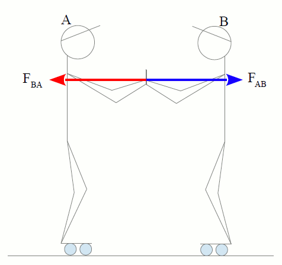
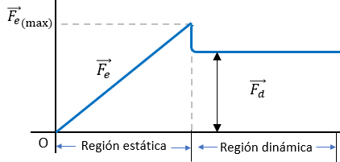
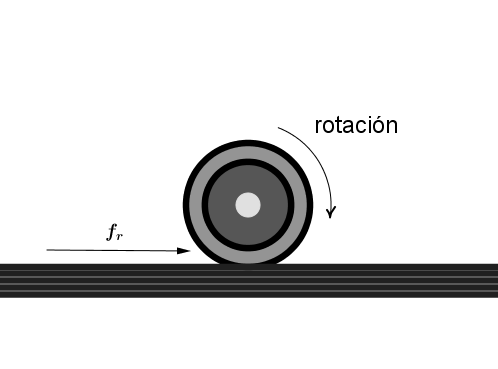

Fuerza
Fuerza y fricción
Al aplicar una fuerza sobre un objeto, pueden suceder dos efectos:
Movimiento y/o deformación
Propiedades de las fuerzas
Se caracterizan por su magnitud, su dirección, su sentido y su punto de aplicación

Las fuerzas ocurren en parejas

Una fuerza sobre un objeto puede deformarlo

Una fuerza puede producir un cambio en la velocidad de un objeto (Aceleración)
La unidad de la fuerza es el Newton (N)
$$1Newton = 1\frac{\text{kg\ m}}{s^{2}}$$
Clasificación
Fuerzas Internas
Existen entre las partes del objeto mismo
Fuerzas externas
Son ejercidas por otros objetos sobre el cuerpo de estudio
Fuerzas de contacto
Cuando hay contacto físico entre los objetos que interactúan
Fuerzas de acciona distancia
Cuando entre dos cuerpos hay una interacción sin que exista contacto físico
Fricción
La fuerza que se opone al movimiento y esta presente cuando dos medios se encuentran en contacto
Se crean puntos de alta presión, provocando fusión o cohesión local entre las dos superficies
Para mover una de las superficies sobre la otra, se deben romper estos puntos de alta presión
Leyes

Siempre actúa en sentido opuesto al movimiento o a la fuerza que intenta producirlo

Es independiente del área de contacto

Es proporcional al peso (carga)

Es independiente de la rapidez del desplazamiento
Fricción estática
$$f_{s}$$
Evita el movimiento entre superficies secas y limpias en contacto
Fricción dinámica o cinética
$$f_{d}$$
Aparece una vez que se ha vencido la fricción estática y se ha iniciado el movimiento

Fricción por rodamiento
$$f_{r}$$
Presente cuando un objeto esférico o cilíndrico gira sobre una superficie plana o cuando dos cuerpo
cilíndricos se mueven uno respecto al otro
La fricción por rodamiento es menor que la fricción dinámica

Coeficiente de fricción $$(\mu)$$
Mide la dificultad que se presenta al deslizar una superficie sobre otra
A mayor coeficiente fricción, mayor sera la fuerza de fricción
La fuerza de fricción entre dos objetos está definida por:
$$f = \mu N$$
Fuerza de fricción estática máxima:
$$f_{\text{s\ max}} = \mu_{s}N$$
Fuerza de fricción dinámica o cinética:
$$f_{d} = \mu_{d}N$$
Fuerza de fricción por rodamiento:
$$f_{r} = \mu_{r}N$$
Donde:
$$N = fuerza\ normal$$
Un bloque de madera sobre un piso de madera se va a mover, pero antes de hacerlo se quiere conocer la
fuerza de fricción estática máxima que existe entre dichas superficies. Se sabe que el coeficiente de
fricción es 0.4 y que la fuerza normal entre estas dos superficies es de 80N ¿Qué valor tiene la fuerza
de fricción estática máxima?
El mismo bloque de madera se mueve a velocidad constante sobre el piso de madera, y el coeficiente de
fricción dinámico es de 0.3 ¿Cuál es el valor de la fuerza de fricción dinámica?
Masa inercial
La resistencia que presentan los cuerpos para cambiar su estado de movimiento o reposo se llama inercia
La masa inercial (o solo masa) es la medida de la inercia, a mayor inercia mayor masa
$$1\ slug = \ 14.59kg$$
Se puede medir la masa comparando aceleraciones que una fuerza determinada produce sobre un cuerpo
$$\frac{m_{1}}{m_{2}} = \frac{a_{2}}{a_{1}}$$
Si un bloque de 1 kg experimenta una aceleración de 4 m/s^2, cuando actúa sobre él una determinada
fuerza. Determina la masa del baúl que experimenta una aceleración de 0.25 m/s^2 cuando actúa la misma
fuerza